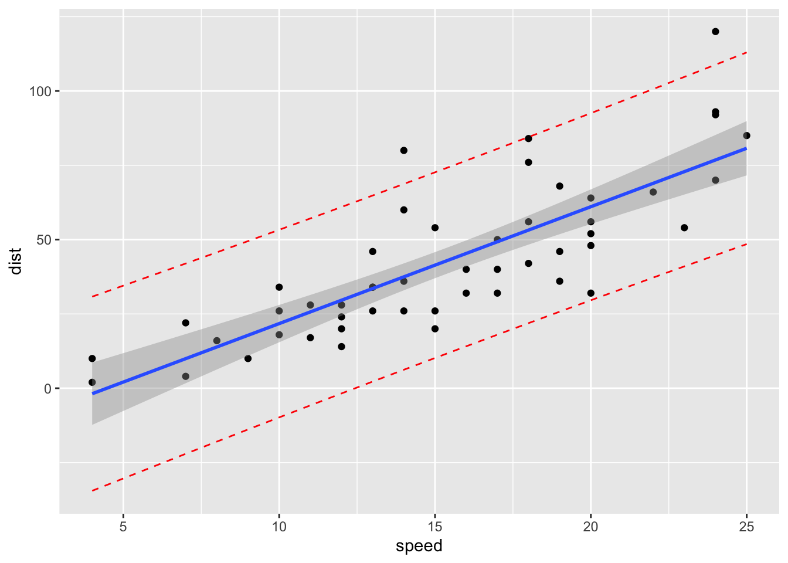

模型预测与置信区间
王诗翔 · 2018-09-30
分类:
r
标签:
r
prediction
linear-regression
线性回归的主要目的是根据一个或多个预测变量（自变量）预测一个结果值。本文会讨论如何使用R来预测新观测值的结果。你也将学习如何展示置信区间和预测的区间。
构建线性回归
我们首先构建一个基于汽车速度预测刹车距离的线性回归模型。
# Load the data
data("cars", package = "datasets")
# Build the model
model <- lm(dist ~ speed, data = cars)
model
#>
#> Call:
#> lm(formula = dist ~ speed, data = cars)
#>
#> Coefficients:
#> (Intercept) speed
#> -17.58 3.93因此线性模型公式可以写作： dist = -17.579 + 3.932*speed.
公式中两个变量的单位需要注意 ## 新数据集的预测
使用上面的模型，我们可以为一个新的速度值预测刹车距离。
首先创建一个新的数据框，它必须包含新的数据值，比如3个新的速度值，变量名要保持一致：
new.speeds <- data.frame(
speed = c(12, 19, 24)
)通过R函数predict()，我们可以进行新刹车距离的预测：
predict(model, newdata = new.speeds)
#> 1 2 3
#> 29.6 57.1 76.8置信区间
置信区间反应了均值预测的不确定性。想要展示预测均值的95%置信区间，指定选项interval = "confidence"：
predict(model, newdata = new.speeds, interval = "confidence")
#> fit lwr upr
#> 1 29.6 24.4 34.8
#> 2 57.1 51.8 62.4
#> 3 76.8 68.4 85.2输出包含下面一些列：
fit: 预测的均值lwr和upr: 预测均值的下边界与上边界，默认是95%置信区间
该如何解释呢？例如，速度为19时的95%置信区间是 (51.83, 62.44)。这意味着根据我们的模型，一个以19 mph速度行驶的汽车，它的刹车距离平均水平在 51.83到62.44 ft范围内。
预测区间
预测区间给出了单个值得不确定性。跟计算置信区间方式相同，我们可以用一下代码计算预测区间：
predict(model, newdata = new.speeds, interval = "prediction")
#> fit lwr upr
#> 1 29.6 -1.75 61.0
#> 2 57.1 25.76 88.5
#> 3 76.8 44.75 108.8跟速度为19关联的95%预测区间是(25.76, 88.51)。这意味着，根据我们的模型，95%的以19 mph速度行驶的车的刹车距离在25.76和88.51之间。
注意预测区间非常依赖残差服从正态分布的假设。因此，如果你确定手里的数据基本满足这个假设才能使用它。
预测区间或置信区间？
一个预测区间反映了单个数值的不确定性，而一个置信区间反映了预测均值的不确定性。因此，一般而言，对同样的值，预测区间的范围都比置信区间大。
我们应该使用哪一种呢？这个问题的答案依赖分析的语境和目的。通常讲，我们队特定的单个预测感兴趣，这时候预测区间会比较合适。在你该使用预测区间时却使用了置信区间会极大地低估给定预测值的不确定性(P. Bruce and Bruce 2017)。
下面的R代码创建一个散点图，并带有：
- 蓝色的回归线
- 灰色的置信区间
- 红色的预测区间
# 0. Build linear model
data("cars", package = "datasets")
model <- lm(dist ~ speed, data = cars)
# 1. Add predictions
pred.int <- predict(model, interval = "prediction")
#> Warning in predict.lm(model, interval = "prediction"): predictions on current data refer to _future_ responses
mydata <- cbind(cars, pred.int)
# 2. Regression line + confidence intervals
library("ggplot2")
p <- ggplot(mydata, aes(speed, dist)) +
geom_point() +
stat_smooth(method = lm)
# 3. Add prediction intervals
p + geom_line(aes(y = lwr), color = "red", linetype = "dashed")+
geom_line(aes(y = upr), color = "red", linetype = "dashed")
#> `geom_smooth()` using formula 'y ~ x'
参考文献
Bruce, Peter, and Andrew Bruce. 2017. Practical Statistics for Data Scientists. O’Reilly Media.